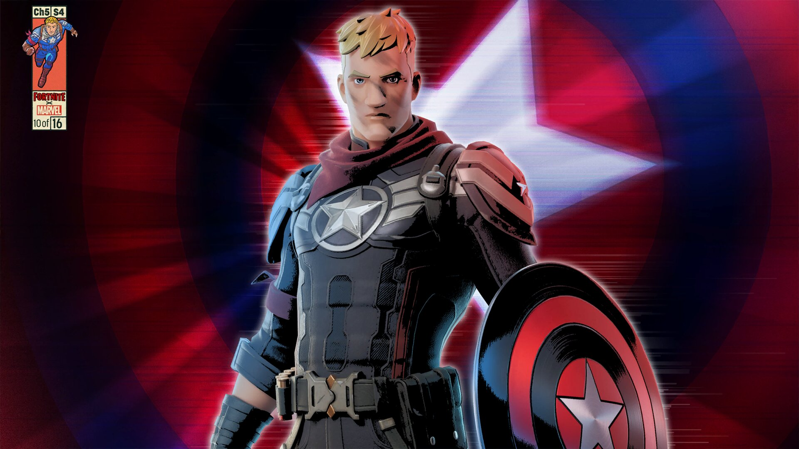
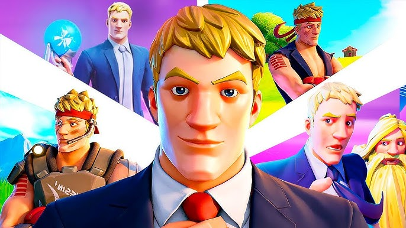
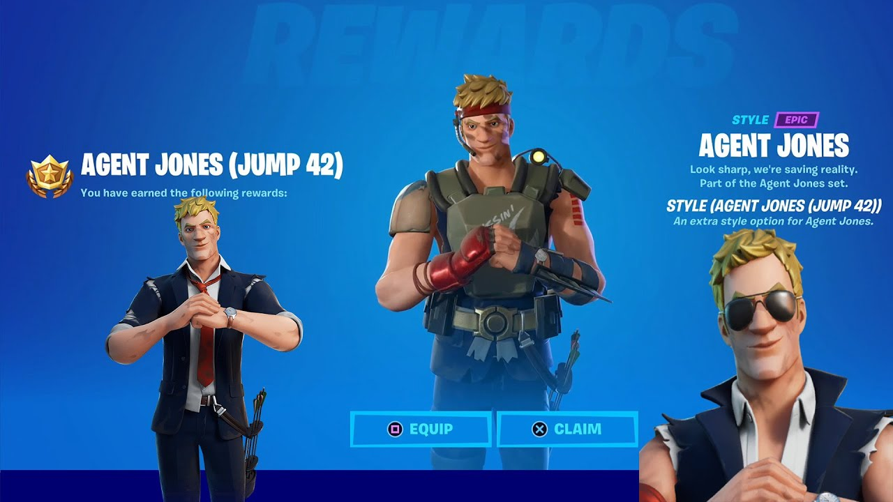
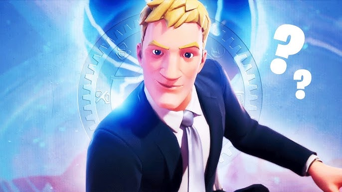

JONES
inicio
/
historia
/
primeira aparição
/
curiosidade
/
sobre
/
videos
/
Contatos

Agent Jones é um personagem do universo de "Fortnite", um popular jogo de batalha real. Ele é conhecido como um agente da organização chamada "The Seven" e desempenha um papel importante na narrativa do jogo, especialmente em eventos e temporadas que envolvem mistérios e batalhas interdimensionais. Jones também é associado a várias outras versões de si mesmo de diferentes realidades, o que adiciona uma camada interessante à sua história
A Historia do Agent Jones

A história de Agent Jones em "Fortnite" é bastante complexa e se desenvolve ao longo de várias temporadas. Ele começou como um personagem que trabalhava para a "Zero Point" e era responsável por capturar jogadores de outras realidades para manter o equilíbrio do Multiverso.
A narrativa de Jones se aprofundou quando ele começou a questionar suas lealdades e a se rebelar contra as ordens que recebia. Ele se tornou um personagem central em várias batalhas e eventos, tentando proteger o que restava do seu mundo enquanto enfrentava ameaças de outras dimensões.
Ao longo do tempo, Jones se uniu aos "The Seven", um grupo que busca combater forças malignas e restaurar a ordem no Multiverso. Sua jornada inclui reviravoltas emocionais e dilemas éticos, tornando-o um dos personagens mais intrigantes do jogo.
Primeira Aparição do Agent Jones

Agent Jones fez sua primeira aparição em "Fortnite" durante a Temporada 5 do Capítulo 2, que começou em dezembro de 2020. Ele foi introduzido como parte da narrativa central da temporada, que girava em torno da caça de personagens de diferentes realidades. Desde então, seu papel se expandiu, e ele se tornou uma figura importante na história do jogo.
Curiosidade sobre o Agent Jones

1*:Múltiplas Realidades: Agent Jones tem a habilidade de viajar entre diferentes realidades, o que permite que ele interaja com versões de si mesmo e com personagens de outras franquias. Essa mecânica de multiverso adiciona uma camada de complexidade à sua história.
2*:Conexão com "The Seven": Embora inicialmente trabalhasse para a "Zero Point", ele acabou se unindo aos "The Seven". Essa transição é significativa, pois mostra seu desenvolvimento de um agente que seguia ordens a alguém que busca proteger o Multiverso.
3*:Eventos e Narrativa Dinâmica: Jones desempenhou um papel central em vários eventos ao vivo do "Fortnite", como o evento "The Device" e o "The Zero Crisis Finale". Ele tem um papel ativo em moldar a narrativa do jogo, sendo uma figura que liga diferentes temporadas e eventos.
Site e mais sobre o Agent Jones
SOBRE O AGENT JONES
</div> </section> <br> <section id="seila nao duncui"> <h3>Quem é Agent Jones</h3> <div class="parallax-inner"> <h1>Contato e Ajuda</h1> <iframe width="1900" height="800" src="https://www.epicgames.com/help/pt-BR/c-Category_Fortnite"> <iframe src="https://www.google.com/maps/embed?pb=!1m18!1m12!1m3!1d207181.16242263067!2d-78.99511792597154!3d35.77032408036515!2m3!1f0!2f0!3f0!3m2!1i1024!2i768!4f13.1!3m3!1m2!1s0x89acbd54ff4a8b43%3A0x44568fdb5a444be1!2sCary%2C%20NC%2C%20USA!5e0!3m2!1sen!2sbr!4v1729618244853!5m2!1sen!2sbr" width="600" height="450" style="border:0;" allowfullscreen="" loading="lazy" referrerpolicy="no-referrer-when-downgrade">
Procure eles Online
epicgames
Epic Games
--------------------------------------------------------------------------------------------------------------------------------------------------------------
--------------------------------------------------------------------------------------------------------------------------------------------------------------